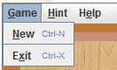
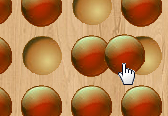
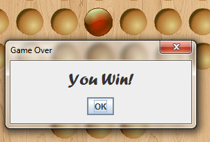
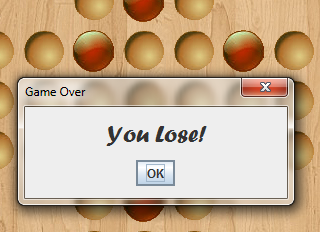

Basic Game Controls
New Game
To begin a new game at any time, click Game -> New in the menu bar. The short key is Ctrl-N.

Game Menu
Moving Pegs
In order to move pegs, the player will need to use their mouse to click on the peg they wish to move. Then, they must drag it on top of a valid spot and release it by releasing the mouse click. If the move that the player wishes to make is not valid, the peg will return to its original position.

Moving a piece
Undoing Moves
To undo moves, click on the “Undo Moves” button that is found on the side panel to the right of the board. This button can be used to undo moves all the way back to the beginning of the game.
The Undo Move button
Game Over
If there are no more possible moves left to be made, the game is over.
If there is only one peg remaining, the game has been won. A message will pop up indicating that the game has been won.

Only one peg remains and the “You Win!” message
If there is more than one peg remaining, the game has been lost. A message will pop up indicating that the game has been lost.

More than one peg remains and the “You Lose!” message
Once the game is over, you may choose to begin a new game. In addition, once the game is over, you may not undo moves.
Exit Game
To exit the game at any time, click Game -> Exit in the menu bar. The short key is Ctrl-X.